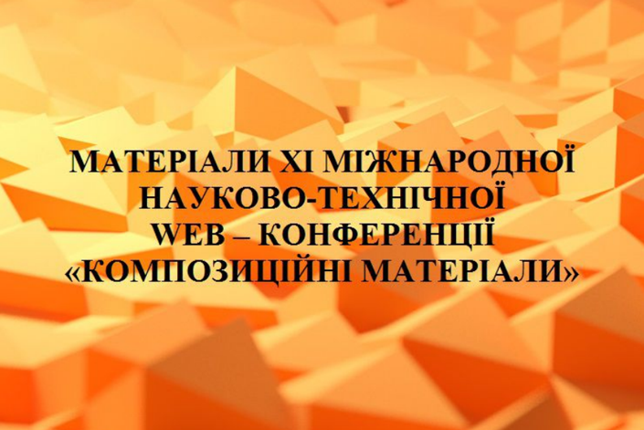

|

МАТЕРІАЛИ ХІ МІЖНАРОДНОЇ НАУКОВО-ТЕХНІЧНОЇ WEB – КОНФЕРЕНЦІЇ «КОМПОЗИЦІЙНІ МАТЕРІАЛИ»
Шановні викладачі, науковці, аспіранти та студенти!
Запрошуємо Вас взяти участь в ХI Міжнародній науково-технічній Web-конференції "КОМПОЗИЦІЙНІ МАТЕРІАЛИ", яка відбудеться 02.04 – 27.04. 2018 р. в Національному технічному університеті України «Київський політехнічний інститут імені Ігоря Сікорського».
Мета проведення конференції: Обговорення результатів нових досліджень і розробок із композиційних матеріалів та виробів на їх основі (сировинна база, технології, обладнання, структура і експлуатаційні властивості).
Основні тематичні напрямки конференції:
СЕКЦІЯ 1. Композиційні матеріали на основі полімерів.
СЕКЦІЯ 2. Композиційні матеріали на основі тугоплавких, неметалевих і силікатних матеріалів.
Робочі мови конференції: українська, російська, англійська.
Ключові дати:
Прийом, реєстрація заявок, доповідей, організаційних внесків з 02.04.2018 р.
Обговорення матеріалів на сайті до 27.04.2018 р.
Розміщення електронного збірника на сайті до 04.05.2018 р
Видання збірника до 11.05.2018 р.
Розсилання збірника до 21.05.2018 р.
Умови участі в конференції:
Організаційний внесок в розмірі 150 грн. включає витрати на видання та розсилання збірників авторам і в центральні науково-технічні бібліотеки України.
Реквізити для сплати внеску за участь в конференції:
Банк ДКСУ МФО 820172, Код 02070921, р/р 31254389113853 одержувач НТУУ «КПІ» в призначенні вказати за участь в web-конференції «Композиційні матеріали» Прізвище
КЕКД 25020100
Увага! Збірники матеріалів конференції учасникам надсилаються протягом місяця після закінчення конференції!
На одну публікацію надсилається один авторський примірник збірника матеріалів конференції. Для одержання додаткових примірників необхідно сплатити їх вартість у розмірі 75 грн. за кожний додатковий примірник, про що необхідно вказати в заявці та документі про оплату. Прохання додаткові примірники замовляти заздалегідь.
Доповіді повинні бути ретельно відредаговані авторами.
Відповідальність за зміст доповіді покладено на авторів.
Для участі у конференції необхідно зареєструватися та прикріпити матеріали доповіді на сайті http://iwccm.kpi.ua/, де відповідно можна ознайомитися з правилами їх оформлення. Скановану копію квитанції про здійснену оплату необхідно надіслати на електронну адресу: conf-xtkm@ukr.net вказавши в темі листа - оргвнесок прізвище учасника.
ТЕРМІН ПОДАННЯ МАТЕРІАЛІВ І СПЛАТА ОРГАНІЗАЦІЙНОГО ВНЕСКУ за участь в конференції – до 27 квітня 2018 р.!
Всі зареєстровані учасники мають можливість прийняти участь в обговоренні матеріалів конференції на сайті.
Телефони для довідок: +38 063 421-24-97, +38 063 445-91-91, +38 044 204-97-96
Факс: +38 204-86-05
Електронна адреса: xtkm@kpi.ua
Вимоги до оформленя
Про конференцію
|